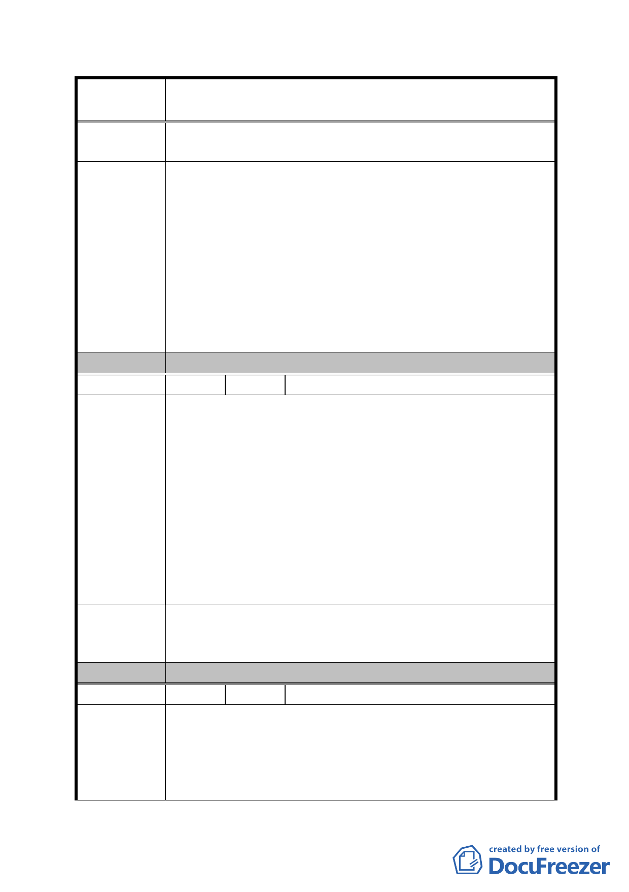

案
名
修訂臺北市「基隆河（中山橋至成美橋段）附近地區土地使
用分區與都市設計管制要點」（北段地區）計畫案
實，徒增開發者及都市設計審議困擾，喪失國內外投資都市
開發意願。
一、建議回歸92年細部計畫開放空間計算方式。若無條件開
放住宅使用，更能吸引更多圍內外開發業者投資，促進
區域發展，真正成為未來全市副都心。
二、建議維持容積移轉不得超過基準容積之 40%。
建議辦法
三、不應再繳納代金，或是應採用 94 年修訂版本為基準。
四、維持土地管制規則精神，僅規範建蔽率最大值。
五、回歸技術規則，不應強制規定設計方式，應鼓勵更多元
之建築設計空間。
六、刪除此規定，不應強制規定設計方式，應鼓勵更多元之
建築設計空間。
委 員 會 決 議 同編號 1。
編 號 5 陳情人 吳孟衡（B2）
一、本使用區高度限制擬修正為 50 公尺以下，建請放寬為
60 公尺以下得符合都市景觀意象的規劃，達到多層次
的高度變化使天際線充滿節奏韻律感，再者建築物的高
度放寬有助於城市綠化與開放空間的擴大，降低空間壓
迫感而達到環境協調與綠化市容之目標，對都市計劃之
陳情理由
原則有正面之助益。
二、原計畫許可金融保險業組別，但本次公展計畫書將其刪
除，建請維持金融保險業為許可組別之原規定。因金
融、保險業一般皆在地面一、二層設置營業空間，若依
本公展規定則只能設置在 3 樓以上，有違常理，且不符
當前使用效益。
一、B2 娛樂區供娛樂購物中心使用，高度限制 50 公尺以下
建議辦法
之規定，建請修正為 60 公尺以下。
二、建請維持金融保險業為許可組別之原規定。
委 員 會 決 議 同編號 1。
編號
陳情理由
6 陳情人 楊玉瑛（B2 金泰段 16-1 地號）
1、內湖科學園區及大彎南段緊鄰本區，且其地價遠低於
本區，台北市政府十餘年來大幅開放上揭地區之商業
使用致嚴重壓縮本區商業使用需求，是本區商業用地
由高強度之商業使用轉作低強度之住宅使用實為不得
不然。
- 58 -